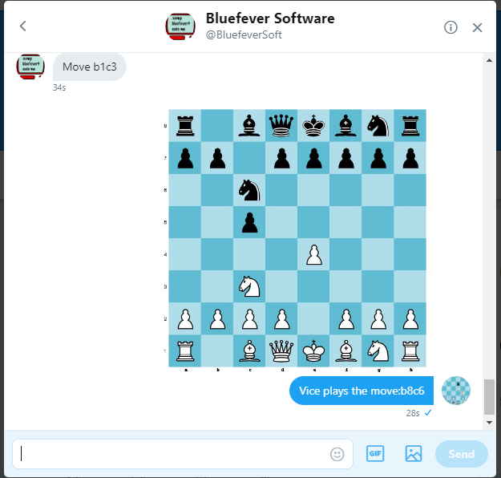

VICE is a simple chess program made in C, detailed in nearly 100 videos on YouTube. You can see the details here
As a nice little side project, VICE now plays in 'correspondence style' via Twitter! (I hope)
It's running on a Raspberry Pi 2
It's in very early stages of development - in other words, it's been tested just by me, so expect odd things to happen now and again.
Feel free to DM me at the Twitter Handle Follow @BluefeverSoft or email ViceChess@Yahoo.com
Important - the first message from a new source (you) has to be manually accepted - the Twitter API doesn't seem to have this (as far as I can tell). So there could be a wait to get a reply when you first ever send Vice a message.
You can play games with Vice using Messaging on Twitter - you send it commands / moves, and it (hopfully) replies.
Make a move - it MUST be in the form e7e8q - e7 is the from square, e8 the to sqaure, and in the case of a promotion, q = queen, n = knight, r = rook, b = bishop.
For Example:
If Vice doesn't understand your move, it will let you know
Vice **should** correctly adjudicate draws, mates, fifty move draws, low material draws and stalemates
Vice will process the command, BUT NOT ALWAYS INSTANTLY - but usually within 30 minutes or so. Any more than that and it means it's overloaded, or broken. The former would be nice, the latter a high probability
Why is this? Well, it loads tweets at regular intervals - usually every 10 minutes or so. It then looks at the moves, thinks about them, and sends the reply. Better would be to get tweets as they are sent - and indeed, there is a streaming API from Twitter that does just this. Vice works with the streaming API, but I need to refine it still so it doesn't block (in the case of many moves - again a nice problem to have). Streaming will come in the near future.
Here's a view from a game in progress..
This is a hobby, for enjoyment. Don't get too mad if things break.
A lot of people seemed to like the series I did on making Vice, so I might try and do the same for this app. We'll see.
The bot consists of: